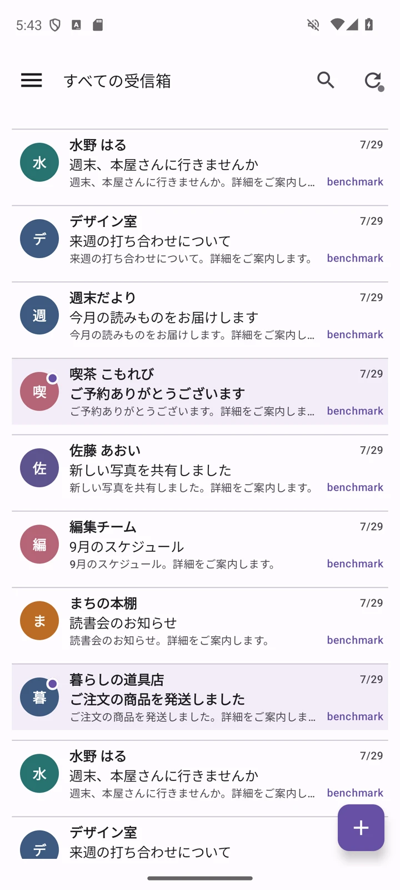

01 — SCROLL
Browse at your own pace.
Five quick, nearly continuous swipes over about five seconds, showing the touch position and smooth inbox movement at original speed.
ABOUT 5 SEC · REAL · 1×
YOUR MAIL. YOUR PACE.
Work conversations. Everyday updates.
All your inboxes, in one place.

A CLOSER LOOK
Recorded in a Pixel 8 emulator.
App interactions are shown at their original speed.
Five quick, nearly continuous swipes over about five seconds, showing the touch position and smooth inbox movement at original speed.
A cached message opening at original speed, with the transition preserved exactly as recorded.
Recording: Pixel 8 emulator / Android 14 / isolated capture build using the v1.9 UI / 600 fictional, cached messages / original playback speed. The videos demonstrate basic inbox scrolling and message opening. Only idle time before and after each interaction is shortened. Uncached messages require a network fetch. Performance varies by device, connection and message.
INLYRA MAIL 2.0
Archive and folder lists use the same synchronized state as their counts, reducing drift caused by cache update order.
After a message is marked read, the inbox, read state and notification are reconciled so an old lock-screen alert does not linger.
The message-detail actions are simpler, while HTML and text views remain easy to switch between.
The account screen presents the app-password creation process as numbered steps in the order you need them.
The waiting notice stays off the lock screen and has its own Android notification channel for individual control.
Read Gmail and IMAP together, or switch to individual accounts and folders.
About privacy ↗START WITH INLYRA
The signed APK is available free on GitHub Releases.
Gmail setup requires an app password.